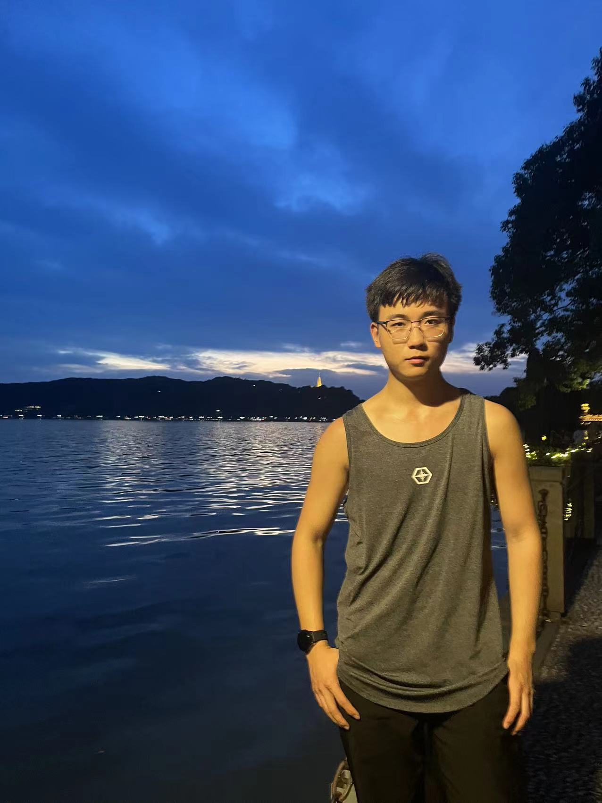

Sep 2024 — Present
HKUST (Guangzhou)
MPhil studies in Robotics and Autonomous Systems
MPhil Student in Robotics and Autonomous Systems
The Hong Kong University of Science and Technology (Guangzhou)
I am an MPhil student at HKUST (Guangzhou). My research interests lie at the intersection of aerial robotics, reinforcement learning, and visual perception. I work on enabling robots to navigate complex environments and interact with the physical world through learning-based planning and control.
Previously, I studied Process Equipment and Control Engineering at Northeastern University, where I worked on quadruped locomotion and a reinforcement-learning-based volleyball-juggling robot.

High-speed obstacle avoidance using monocular and panoramic depth perception, reinforcement learning, and trajectory planning.
Coordinated control of UAVs and grippers for object interaction, alongside transformer-based unified control for tail-sitter VTOL aircraft.
Learning locomotion policies for legged robots and exploring short- and long-term memory in vision-language-action models.
My name is highlighted in bold. Work in preparation is listed separately below.
Submitted to IEEE International Conference on Robotics and Automation (ICRA).
arXivSubmitted to IEEE International Conference on Robotics and Automation (ICRA).
arXivAccepted for publication in IEEE Robotics and Automation Letters.
arXivManuscript in preparation; intended submission to IEEE Robotics and Automation Letters (RA-L).
Sep 2024 — Present
MPhil studies in Robotics and Autonomous Systems
Sep 2020 — Jul 2024
Process Equipment and Control Engineering
Nov 2025 — Nov 2026 (scheduled)
Algorithm Research & Development
Panoramic depth perception and real-world UAV obstacle-avoidance experiments.
Sep 2025 — Nov 2025
Algorithm Research & Development
Reinforcement learning for TITA locomotion on rough terrain, with Isaac Lab training and MuJoCo deployment.
May 2022 — Mar 2023
Research Assistant · Smart Manufacturing Thrust
Backend data infrastructure and equipment communication for the GB-X project.
Quadruped control and reinforcement learning; team lead for a ROS 2 volleyball-juggling robot.
Python / C++ / ROS 2 / Isaac Lab / MuJoCo / AirSim / Webots / MATLAB
For research discussions and collaboration, feel free to reach out.
wzhao799@connect.hkust-gz.edu.cn